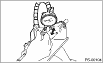

1. Clean all the disassembled parts, and check for wear, damage or any other faults, then repair or replace as necessary.
2. When disassembling, check the inside of gearbox assembly for water. If any water is found, carefully check the boot for damage, and the input shaft dust seal, adjusting screw and boot clips for poor sealing. If faulty, replace with new parts.
|
No. |
Part |
Inspection |
Corrective action |
|
1 |
Input shaft |
(1) Bent input shaft (2) Damage on serration |
If there is excessive bend or damage, replace the entire gearbox assembly. |
|
2 |
Dust seal |
(1) Crack or damage (2) Wear |
If the outer wall slips, the lip is worn out or damage is found, replace it with a new dust seal. |
|
3 |
Rack & pinion |
Poor mating of rack with pinion |
(1) Adjust the backlash properly. By measuring the turning torque of the gearbox and the sliding resistance of the rack, check if the rack & pinion engages uniformly and smoothly with each other. (refer to “SERVICE LIMIT”) (2) Pull out the entire rack to allow viewing of the teeth, and check for damage. If a problem of either (1) or (2) is found, replace the entire gearbox assembly. |
|
4 |
Gearbox unit |
(1) Bending of the rack shaft (2) Bending of the cylinder portion (3) Crack or damage on cast iron portion |
Replace the gearbox assembly with a new part. |
|
(4) Wear or damage on rack bushing |
If the free play of rack shaft in the radial direction is out of the specified range, replace the gearbox assembly. (refer to “SERVICE LIMIT”) | ||
|
(5) Wear on input shaft bearing |
If the free play of input shaft in radial and axial direction is out of the specified range, replace the gearbox assembly. (refer to “SERVICE LIMIT”) | ||
|
5 |
Boot |
Crack, damage or deterioration |
Replace |
|
6 |
Tie-rod |
(1) Looseness of ball joint (2) Bend of tie-rod |
Replace |
|
7 |
Tie-rod end |
Damage or deterioration of dust seal |
Replace |
|
8 |
Adjusting screw spring |
Deterioration |
Replace |
|
9 |
Boot clip |
Deterioration |
Replace |
|
10 |
Sleeve |
Damage |
Replace |
|
11 |
Pipe |
(1) Damage to flared surface (2) Damage to flare nut (3) Damage to pipe |
Replace |
Make a measurements as follows. If it exceeds the specified service limits, adjust or replace.
NOTE:
When making a measurement, hold the gearbox assembly in a vise using the ST. Do not hold the gearbox in a vice by inserting aluminum plates etc. between the vise and gearbox assembly.
| ST 926200000 | STAND |
Sliding resistance of rack shaft:
Service limit
304 N (31 kgf, 68 lbf) or less
3. RACK SHAFT PLAY IN THE RADIAL DIRECTION
Left-turn steering:
Service limit
0.19 mm (0.0075 in) or less
On condition
L: 5 mm (0.20 in)
P: 98 N (10 kgf, 22 lbf)
Right-turn steering:
Service limit
Direction 

0.3 mm (0.012 in) or less
Direction 

0.19 mm (0.0075 in) or less
In radial direction:
Service limit
0.18 mm (0.0071 in) or less
On condition
P: 98 N (10 kgf, 22 lbf)
In axial direction:
Service limit
0.5 mm (0.020 in) or less
On condition
P: 20 — 49 N (2 — 5 kgf, 4 — 11 lbf)

5. TURNING RESISTANCE OF GEARBOX
Using the ST, measure the gearbox turning resistance.
| ST 34099PA100 | SPANNER |
Service limit
Maximum allowable resistance
9.33 N (0.95 kgf, 2.1 lbf) or less
Difference between right and left turning resistance:
20% or less
|
(1) |
Power cylinder |
(3) |
Rack piston |
(5) |
Input shaft |
|
(2) |
Cylinder |
(4) |
Rack |
(6) |
Valve housing |
1. If a fluid leak is found, clean the fluid completely from the suspect area, and turn the steering wheel 30 to 40 times to the left and right from lock to lock, with the engine running, and check again for leaks immediately, and also after a few hours have passed.
2. Cause and solution for oil leakage from “a”.
The oil seal is damaged. Replace the valve assembly with a new part.
3. Cause and measure for oil leakage from “b”.
The torsion bar O-ring is damaged. Replace the valve assembly with a new part.
4. Cause and measure for oil leakage from “c”.
The oil seal is damaged. Replace the oil seal.
5. Cause and solution for oil leakage from “d”.
The pipe is damaged. Replace the faulty pipe or O-ring.